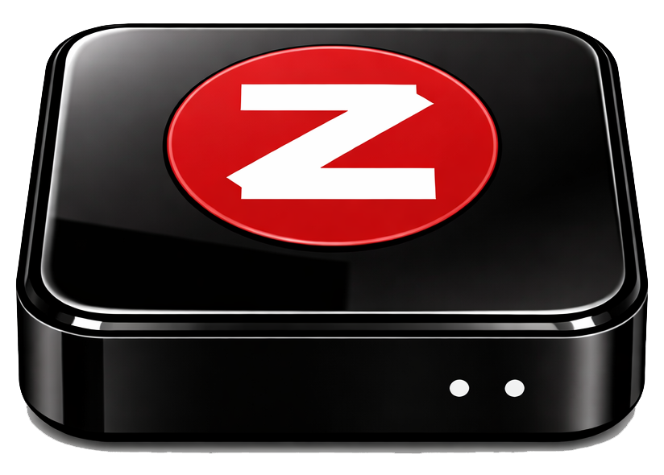

ZipTool
ZIP Chrome Install
Unified install and launch instructions for team testing.
Urgent line just paged? Fast path:
1) `chrome://extensions` -> Developer mode ON -> Load unpacked -> `/Users/minnick/Documents/PASS/ZIP/zip-chrome-extension`
2) Open Zendesk dashboard
3) Open ZIP and hit `Login with Zendesk` if prompted
4) Start with `Assigned Tickets`
ZipTool is the Adobe PASS browser extension for mission-critical continuity. It lives where the work happens, turns live Zendesk context into immediate Slack-connected action, and keeps Support, TAM, and Engineering on the same signal at the exact moment a case needs movement.
ZIP now ships as one master distro zip with the latest repo state included.
Download ziptool_distro.zip, extract it, then load unpacked from /Users/minnick/Documents/PASS/ZIP/zip-chrome-extension. After one-time install, daily use is under 3 clicks: open Zendesk, open ZIP, login if needed.
SLACKTIVATION: SLACKTIVATION is how ZIP closes the gap between triage and response, and the dual-mode Blondie Button is the next step: one path for personal velocity, one path for #PASS-TRANSITION, so handoff happens with shared context, shared urgency, and no dropped thread.
- Open
chrome://extensions. - Turn on Developer mode (top-right).
- Click Load unpacked.
- Select folder:
/Users/minnick/Documents/PASS/ZIP/zip-chrome-extension - Open Zendesk dashboard:
https://adobeprimetime.zendesk.com/agent/dashboard - If logged out, click Login with Zendesk from ZIP panel.
Paste in Chrome’s address bar (Ctrl+L or Cmd+L) and press Enter.
If your team cannot use "Load unpacked", your Chrome admin can deploy this extension centrally using enterprise policy.